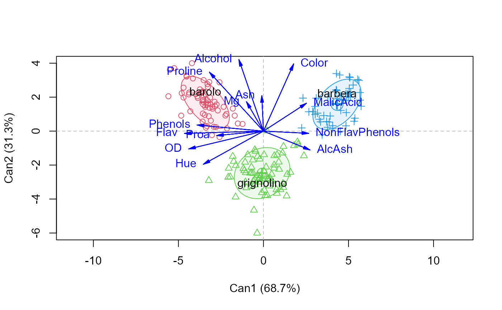
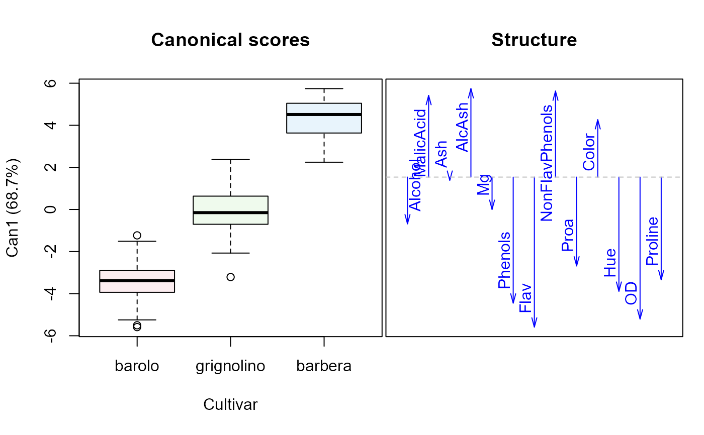

These data are the results of a chemical analysis of wines grown in the same region in Italy but derived from three different cultivars. The analysis determined the quantities of 13 constituents found in each of the three types of wines.
Format
A data frame with 178 observations on the following 14 variables.
Cultivara factor with levels
barologrignolinobarberaAlcohola numeric vector
MalicAcida numeric vector
Asha numeric vector
AlcAsha numeric vector, Alkalinity of ash
Mga numeric vector, Magnesium
Phenolsa numeric vector, Total phenols
Flava numeric vector, Flavanoids
NonFlavPhenolsa numeric vector
Proaa numeric vector, Proanthocyanins
Colora numeric vector, color intensity
Huea numeric vector
ODa numeric vector, OD280/OD315 of diluted wines
Prolinea numeric vector
Source
This data set was obtained from the UCI Machine Learning Repository,
http://archive.ics.uci.edu/ml/datasets/Wine. This page references a
large number of papers that use this data set to compare different methods.
Details
This data set is a classic in the machine learning literature as an easy high-D classification problem, but is also of interest for examples of MANOVA and discriminant analysis.
The precise definitions of these variables is unknown: units, how they were measured, etc.
Examples
data(Wine)
str(Wine)
#> 'data.frame': 178 obs. of 14 variables:
#> $ Cultivar : Factor w/ 3 levels "barolo","grignolino",..: 1 1 1 1 1 1 1 1 1 1 ...
#> $ Alcohol : num 14.2 13.2 13.2 14.4 13.2 ...
#> $ MalicAcid : num 1.71 1.78 2.36 1.95 2.59 1.76 1.87 2.15 1.64 1.35 ...
#> $ Ash : num 2.43 2.14 2.67 2.5 2.87 2.45 2.45 2.61 2.17 2.27 ...
#> $ AlcAsh : num 15.6 11.2 18.6 16.8 21 15.2 14.6 17.6 14 16 ...
#> $ Mg : int 127 100 101 113 118 112 96 121 97 98 ...
#> $ Phenols : num 2.8 2.65 2.8 3.85 2.8 3.27 2.5 2.6 2.8 2.98 ...
#> $ Flav : num 3.06 2.76 3.24 3.49 2.69 3.39 2.52 2.51 2.98 3.15 ...
#> $ NonFlavPhenols: num 0.28 0.26 0.3 0.24 0.39 0.34 0.3 0.31 0.29 0.22 ...
#> $ Proa : num 2.29 1.28 2.81 2.18 1.82 1.97 1.98 1.25 1.98 1.85 ...
#> $ Color : num 5.64 4.38 5.68 7.8 4.32 6.75 5.25 5.05 5.2 7.22 ...
#> $ Hue : num 1.04 1.05 1.03 0.86 1.04 1.05 1.02 1.06 1.08 1.01 ...
#> $ OD : num 3.92 3.4 3.17 3.45 2.93 2.85 3.58 3.58 2.85 3.55 ...
#> $ Proline : int 1065 1050 1185 1480 735 1450 1290 1295 1045 1045 ...
#summary(Wine)
Wine.mlm <- lm(as.matrix(Wine[, -1]) ~ Cultivar, data=Wine)
Wine.can <- candisc(Wine.mlm)
Wine.can
#>
#> Canonical Discriminant Analysis for Cultivar:
#>
#> CanRsq Eigenvalue Difference Percent Cumulative
#> 1 0.90081 9.0817 4.9533 68.748 68.748
#> 2 0.80501 4.1285 4.9533 31.252 100.000
#>
#> Test of H0: The canonical correlations in the
#> current row and all that follow are zero
#>
#> LR test stat approx F numDF denDF Pr(> F)
#> 1 0.019341 77.620 26 326 < 2.2e-16 ***
#> 2 0.194990 56.422 12 164 < 2.2e-16 ***
#> ---
#> Signif. codes: 0 '***' 0.001 '**' 0.01 '*' 0.05 '.' 0.1 ' ' 1
plot(Wine.can, ellipse=TRUE)
#> Vector scale factor set to 5.168

plot(Wine.can, which=1)
